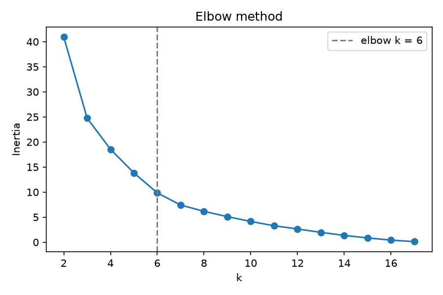

BIR Tax Collection Analysis
CMSC 170
Project
Project
Dataset Information
Title: BIR Tax Collection Data
Source: Bureau of Internal Revenue (BIR), Philippines, Better Gov PH Open Data Portal
Direct Link: https://data.bettergov.ph/datasets/20
Objectives
Classification:
- Predict if the regional tax collections in a given period will increase or decrease in comparison to the same month of the previous year, using past collected data
- 2 Classes of Target Variable:
- Up: Increase of tax collection compared to the same month of the previous year
- Down: Decrease or no change in the tax collection compared to the same month of the previous year
Clustering:
- Group regions into distinct economic profiles based on their tax collections from 2020 - 2024 in categories such as mean monthly tax collection, average annual growth rate, and collection volatility (standard deviations of monthly collections relative to the mean).
- Profile each cluster after evaluating using the silhouette score and elbow method.
Methods of Algorithms
Naive Bayes Classifier
- fast probabilistic method that is suitable for simple numeric and categorical features
- can be used to model the independent probability distributions of each month/region in order to determine the likelihood of their revenue going “up” or “down”
K-Nearest Neighbors (KNN)
- does not assume anything about the data
- can capture recurring seasonal patterns and regional similarities by matching current collection periods to similar past periods
Perceptron
- learns a straight-line boundary between “up” and “down” by fixing its weights every time it makes a mistake
- acts as a linear baseline in order to test if revenue directional shifts are linearly separable
K-Means Clustering
- can be useful for clustering regions with similar tax collection patterns into distinct economic profiles based on average monthly collections, growth rates, and volatility
Evaluation Metrics
Naive Bayes, KNN, Perceptron
Accuracy = (TP + TN) / (TP + TN + FP + FN)
Accuracy
- the fraction of all predictions that are correct in each model
- provides an overall measure of the performance
Precision = TP / (TP + FP)
Precision
- examines how many of the predicted “up” cases were actually “up”
- higher precision insinuates that there are fewer false positive predictions
Recall = TP / (TP + FN)
Recall
- examines how many of the actual “up” data were successfully identified
- higher recall indicates that there are fewer missed increases in tax collection
F1c = 2 · Pc · Rc / (Pc + Rc)
Macro-F1 = (F1up + F1down) / 2
Macro-F1 = (F1up + F1down) / 2
Macro-F1 Score
- gives equal importance to “up” and “down” cases even when they have different number of observations
- can balance out the number of ups and downs
| Pred. Up | Pred. Down | |
|---|---|---|
| Actual Up | TP | FN |
| Actual Down | FP | TN |
Confusion Matrix
- a 2 x 2 matrix is used in order to examine the types of correct and incorrect predictions
- identifies the type of mistakes made by each model
K-Means Clustering
s = (b − a) / max(a, b)
Silhouette Score
- For each point, a is the average distance to its own cluster and b is the average distance to the nearest other cluster.
- It ranges from -1 to 1, and higher values mean clusters are better separated.
- Report the average over all points, and compare it across values of k.
WCSS = Σk=1..K Σx∈Ck ‖x − μk‖²
Inertia (WCSS) with Elbow Method
- Inertia measures the sum of squared distances from data points to their assigned centroids, continually decreasing as the number of clusters increases (meaning tighter groupings).
- To determine the optimal number of clusters rather than score overall model quality, the elbow method plots this inertia against cluster count so you can select the point where the curve bends and diminishing returns flatten out.
Results and Discussion
Model Comparison

K-Means: Choosing the Number of Clusters
